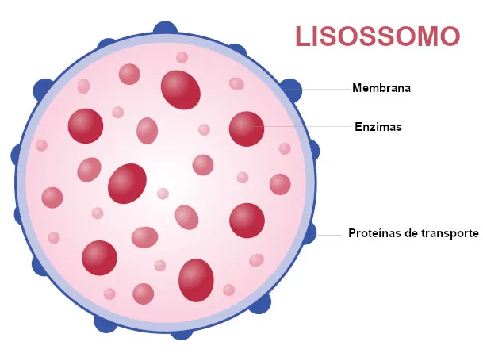
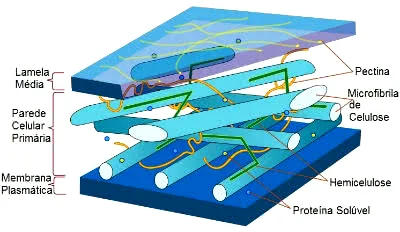
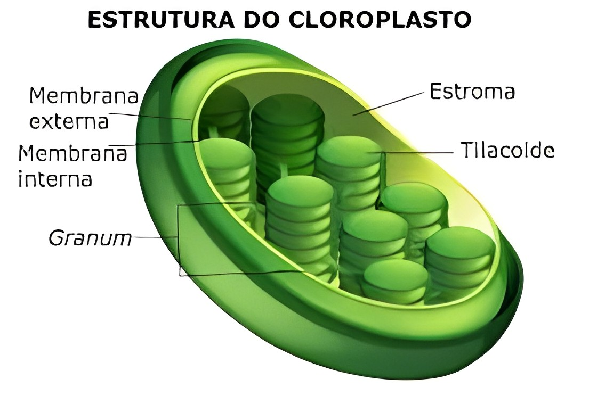
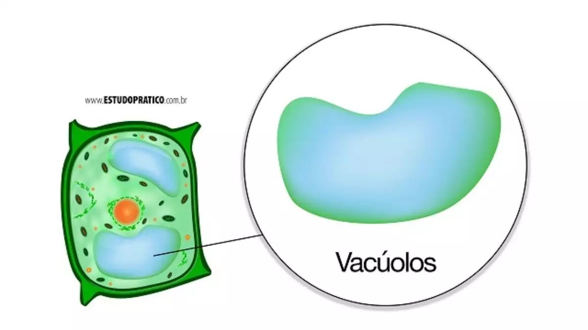
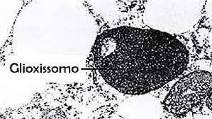

Organelas diferentes
Assista o vídeo para entender sobre as diferentes organelas
Imagens e características de cada organela
Célula animal
Lisossomos
Os Lisossomos são organelas celulares envoltas por membranas que estão presentes nas células eucarióticas.
Essas organelas caracterizam-se por serem sacos membranosos repletos de enzimas, as quais agem degradando diferentes
moléculas, como proteínas e fosfolipídios.
Essas estruturas estão relacionadas com o processo de digestão intracelular, sendo capazes de garantir a digestão de
materiais capturados no meio externo e de estruturas obsoletas da própria célula.
Célula vegetal
Parede Celular
A parede celular é encontrada por fora da membrana plasmática de uma célula vegetal. Poucas espécies possuem essa estrutura.
- O que forma uma parede celular? Ela é formada por celulose, também proteínas, lipídios, enzimas, sílica, entre outras substâncias.
- Qual é a função da parede celular? A parede celular tem várias funções a que é mais conhecida é a de proteção e rigidez da célula,
porém ela também impede que a célula se rompa quando muita água é absorvida, controla o crescimento, armazena alguns compostos e atua até mesmo
na defesa do vegetal.
Plastídeos
O cloroplasto é uma organela celular que, geralmente, possui um formato discoide e atua no processo da fotossíntese.
É um tipo de plastídio ou plasto, é uma organela encontrada em células vegetais e células de algas que tem como destaque
apresentarem um envoltório constituído por duas membranas e uma matriz, onde estão o DNA, RNA, ribossomos e algumas enzimas.
- Onde se localizam os cloroplastos estão localizados?Os cloroplastos são encontrados nas células de algas e nas
de plantas. Nas plantas, os cloroplastos podem estar em diferentes partes, mas normalmente ocorrem mais nas folhas. No mesofilo da
folha, uma célula só poder ter entre 40 e 50 Cloroplasto. Em um milímetro quadrado da folha é possível encontrar 500.000 cloroplastos.
- Como é a estrutura de um cloroplasto?Assim como os plastídios, apresentam um envoltório de duas membranas. Entre
essas membranas há a presença de um espaço chamado de intermembranas. Dentro do cloroplasto há uma matriz mais ou menos
homogênea, que tem o nome de estroma, que é atravessada por um sistema de membranas.
As membranas constituem estruturas em formato de saco achatado chamadas de tilacoides. Os tilacoides contém um espaço interno chamado de lume do tilacoide. Em algumas partes do cloroplasto, os tilacoides estão um por cima do outro, formando um tipo de pilha de moedas, essas pilhas são denominadas de grânulo ou grano.
É na membrana dos tilacoides que a clorofila está presente. Além da clorofila, é possível observar a presença de carotenoides. A cor verde típica das plantas se dá por meio da clorofila que acaba mascarando os carotenoides.
Os cloroplastos são organelas que possuem DNA próprio, os cloroplastos também possuem RNA e ribossomos. Os cloroplastos possuem a capacidade de sintetizar alguns polipeptídeos, porém não são todos que precisam. Por isso os cloroplastos são considerados organelas semiautônomas.
- Qual a função dos cloroplastos?Eles são conhecidos pelo seu papel no processo de fotossíntese, é a organela onde todo o processo importante acontece. Os cloroplastos apresentam também outras funções. Eles estão relacionados ainda com o armazenamento temporário de amido e síntese de proteínas, ácidos graxos e metabólitos secundários.
Vacúolo Central
Os vacúolos são importantes estruturas que diferenciam as células vegetais das células animais.
- O que são os vacúolos? Eles são característicos das células vegetais, são regiões da célula envolvidas por uma membrana única, chamada de tonoplasto. pesquisadores achavam que a estrutura era fazia e oca, porém com o tempo, foi descoberto um líquido que enchia o vacúolo, esse líquido foi chamado de suco celular.
- O que tem dentro dos vacúolos? Além do suco celular também são encontrados cristais, que são formados por causa do acumulo de algum composto que está em concentração elevada. O ph do conteúdo vacuolar normalmente é ácido, ficando em torno de 5.
Também encontramos com frequência no interior do vacúolo os compostos fenólicos, alcaloides e pigmentos como as antocianinas e as flavonas. Que são responsáveis pela coloração vermelha, azul e roxa e amarela.
Dentro dos vacúolos de células de algumas sementes são encontrados os grãos de aleurona, que são proteínas, Esses grãos trabalham promovendo a digestão dos hidratos de carbono durante o processo de germinação
- Principais atividades realizadas pela estrutura:
• Reserva
• Controle osmótico
• Degradação de macromoléculas e reciclagem de componentes celulares
• Defesa
Glioxossomo
Glioxissomos são peroxissomos especiais encontrados nas células de plantas e sementes em germinação, eles agem em algumas reações do processo de fotossíntese, estando relacionados à fixação do gás carbônico.
- Como agem? Os glioxissomos agem em algumas reações do processo de fotossíntese, estando relacionados à fixação do gás carbônico. Já nas sementes, os efeitos dessas organelas são importantes na transformação de ácidos graxos em substâncias de menor tamanho, que por sua vez serão convertidas em glicose e utilizadas pelo embrião em germinação. Além disso, convertem lipídios em carboidratos.os glioxissomos contêm enzimas que iniciam a quebra de ácidos graxos e, adicionalmente, possuem enzimas que produzem substâncias intermediárias para a síntese de açúcares da gluconeogénese.
- Por que são importantes para as sementes?Nas sementes os efeitos dessas organelas são importantes na transformação de ácidos graxos em substâncias de menor tamanho, que serão convertidas em glicose e utilizadas pelo embrião em germinação. Além disso, eles também convertem lipídios em carboidratos.
- Estrutura: Os peroxissomos são organelas esféricas, delimitadas por membrana simples, contendo certas enzimas envolvidas com a oxidação de ácidos graxos